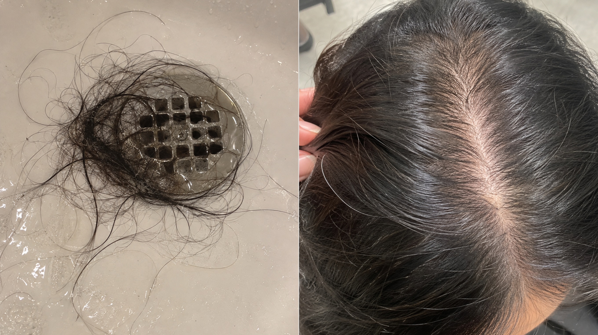
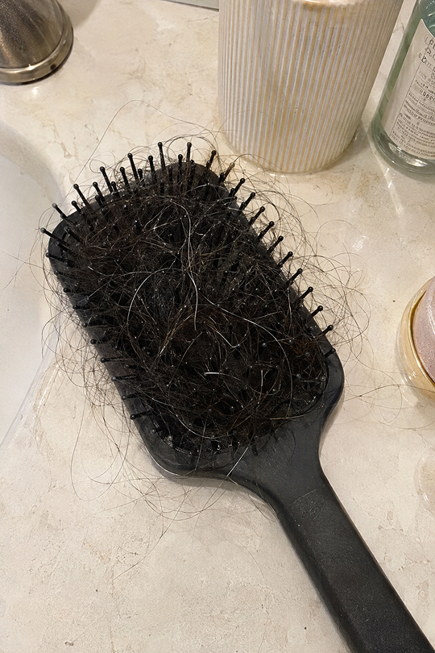
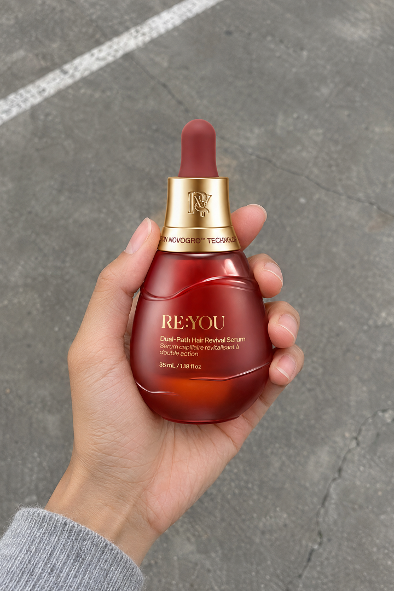
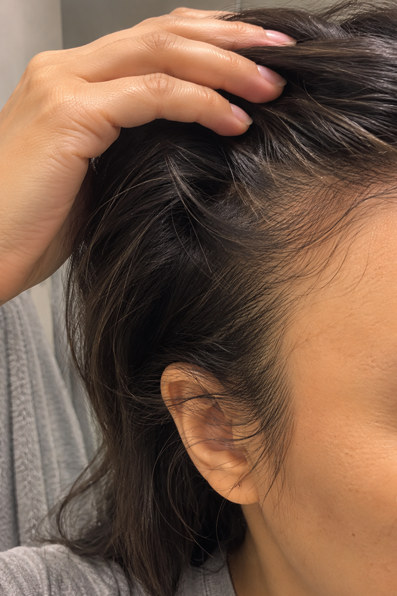
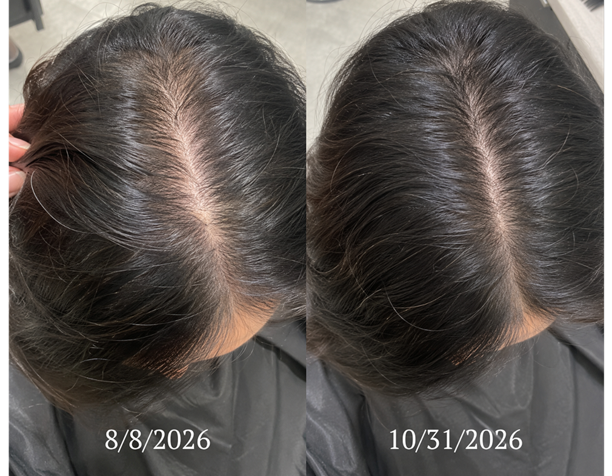
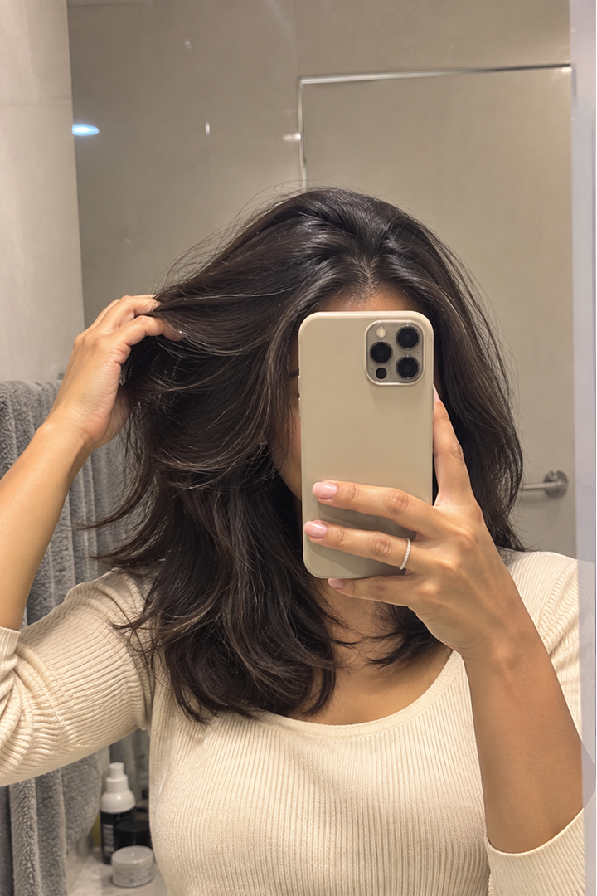

I Noticed It. I Just Never Said It Out Loud.
I had the same stylist for almost 13 years. I scheduled her every six weeks like clockwork, and always on Saturday morning. It was something to look forward to — our morning coffee, a little bit of gossip, and a fresh look for the week — but somewhere in my forties that completely changed.
I noticed more hair in the drain and in my brush. My ponytail felt smaller in my hand. Depending on the lighting, my part looked a little wider than I’d like.

I never brought it up, and waited to see if anyone else noticed. But no one did, so maybe it wasn’t actually happening.
But Then My Stylist Said It Out Loud
It was the same Saturday appointment.
“The usual?”
“Yes ma’am!”
I sat in the chair, coffee in hand, and she lifted a section at my crown and paused. She didn’t react, but the silence made my stomach drop. She held it up to the light, pulled another section at my crown, and did the same.
“Your hair’s getting a little thinner up here. Have you noticed?”
I played it off. No, I hadn’t noticed. It was probably just stress; work had been a lot these past few weeks.
She nodded and moved on to the cut. We dove right into the usual gossip, but for the next 45 minutes I just kept staring at my scalp under those bright, bright salon lights.
I decided it was just getting older. I was hitting the age where this is “normal,” and there wasn’t much you could do about it. So I just hid it:
Then She Walked Me to My Car
Twelve weeks later, I went for another appointment. I blew out my hair beforehand so it would look fuller. I sat in the chair, and my stylist ran her fingers through my hair. No pause, no reaction. I felt like I was off the hook.
But then came the small talk.
“Still using the same shampoo?”
“Have you changed anything in your routine lately?”
“How’s work been? Sleeping okay?”
Normal salon questions, but I felt like each one circled back to my crown. I kept my answers short and said everything was okay. She accepted it.
But at the end of the appointment, she grabbed her coat and said she’d walk me out. We got to the parking lot, and she said,
“Monica, we should do something about the hair thinning.”
I was embarrassed. I didn’t want to make eye contact. Didn’t want to face the reality.
I told her I didn’t have the money to spend on a transplant or PRP. I didn’t want to use minoxidil. I’d heard too many horror stories. Maybe a wig, a hat, or a scarf would be much cheaper.
She stopped me, smiled, and told me about something different.
That’s How I Found RE:YOU
She showed me a new hair serum that her industry friends had been talking about and recommending to clients like me. It had only been on the market a few months when she showed it to me, but she had a lot of faith in it. She said the science was exciting, the clinical trial results were remarkable, and it was going to be a complete game-changer.

I was skeptical. All I had heard about hair serums before this was that they were a waste of money — splurging on something that made your hair greasy, made your scalp itchy, and barely improved your hair thinning (if at all).
But she was convinced.
It was definitely on the pricier side, so I told her I’d go home and think it over.
That night, I looked it up and went down the rabbit hole. The reviews looked great, the before-and-afters looked unbelievable, but what stopped me was the science.
I don’t think I’ve ever seen a brand care this much or say this much about the science.
They explained that hair thinning starts at the hair follicle: follicles rest and shrink, and that’s what causes shedding and thinning. They talked about how their ingredients target dermal papilla cells that control how long each hair grows and how thick each strand comes in.
I felt like a hair expert. I finally understood what was actually happening, and how I could do something about it.
The Clinical Results Were Unbelievable
RE:YOU ran a 190-person, double-blind clinical trial against minoxidil — the treatment everyone was always recommending for hair thinning. The numbers were impressive. After 90 days, participants using RE:YOU measured:
I looked for a catch, I couldn’t find one. Drug-free and hormone-free, you apply it once a day, and it’s compatible with all hair types and routines.
I texted my stylist and ordered it that night.
The First Changes Were Small. But I Noticed Them.
The first few weeks were pretty uneventful, but in a good way.
No greasy roots. It absorbed in seconds. I put it on right after brushing my teeth, so I never skipped a day.

Around week five, I noticed less hair in the drain and in my brush. I couldn’t believe it.
I laughed. For the first time in a long time, I was smiling in the bathroom. I wasn’t stressed or counting hair.
And it kept getting better.
Around week 12, I was seeing baby hairs, my part was looking tighter, even under the bright bathroom light, and my ponytail felt like mine again.
Twelve Weeks Later, I Went Back to the Salon
The same Saturday appointment.
I sat in the chair, coffee in hand, and my stylist ran her fingers through my hair. She couldn’t stop smiling.
When she finished, she pulled out her phone, snapped a photo of my crown, and showed it to me. She had taken a photo at my last appointment, and I hadn’t noticed. She showed the two side by side.
It was like magic. I felt a huge weight lift off my shoulders.

I’m Glad I Stopped Hiding It
I thought about how easily I could have kept going.
Another appointment pushed back. Another day parting my hair to hide it. Another group photo where I hid in the back.
In the moment, that comment from my stylist felt like the lowest point. But it was the first person being honest with me, and then giving me something to do about it.
RE:YOU did the rest.
This is just my experience, but I wouldn’t hesitate for a moment to recommend it to anyone experiencing hair thinning.
If you’re ready to love your hair again, RE:YOU will change your life.
Try RE:YOU Today